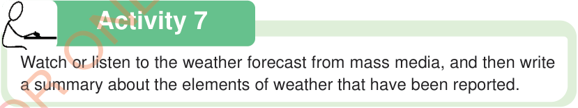

Activity 7
Watch or listen to the weather forecast from mass media, and then write a summary about the elements of weather that have been reported.

Watch or listen to the weather forecast from mass media, and then write a summary about the elements of weather that have been reported.